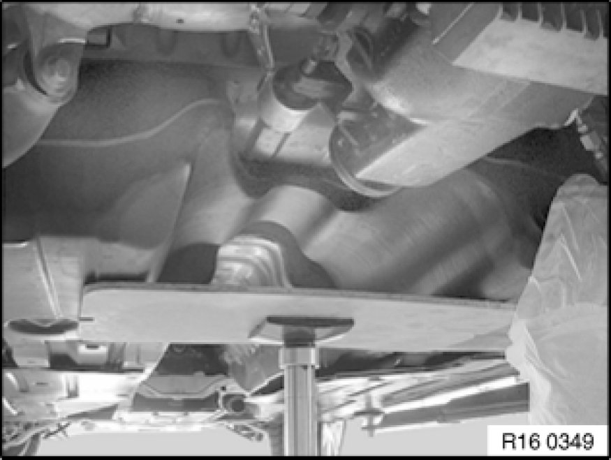

Replacing Clamping Bands for Fuel Tank
16 11 350 - Replacing clamping bands for fuel tank

Necessary preliminary tasks:
- Remove underbody panelling Removing and Installing/Replacing Left or Right Underbody Panelling

Important!
Secure fuel tank against slipping and falling out.
Heavily support the fuel tank.
Release screws (1) and remove clamping band.
Installation:
Tightening torque, 16 11 1AZ 16 11 Fuel Tank and Mounting Parts.